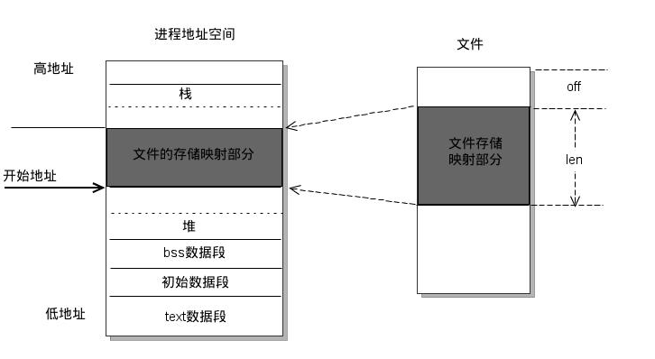

mmap 学习
mmap 是什么
mmap 是 Unix/Linux 提供的系统调用，所以 RTFM（read the fucking manpage）：
allocate memory, or map files or devices into memory.
介绍非常简单，就是分配一块内存或将文件或设备映射到一块内存中。不管是分配内存还是进行文件映射，执行完 mmap 后都会得到一个指向一块内存（虚拟地址空间）的指针，通过这个指针，能够以直接访问内存的方式读写文件或设备。
mmap 怎么用
mmap 的函数声明是：
void mmap(void *addr, size_t len, int prot, int flags, int fd, off_t offset)
函数执行成功返回指向内存的指针，失败则返回 MAP_FAILED (((void *)-1))。
- addr：用于确定映射内存区域的起始地址，需要是页大小的整数倍，不过实际返回的指针指向并不一定等于该值，具体的行为还和是否在 flags 中指定 MAP_FIXED 相关：
| addr | flags | 说明 |
|---|---|---|
| 0 | flags & MAP_FIXED = 0 | 系统自动选取一段空闲地址空间完成映射 |
| 0 | flags & MAP_FIXED != 0 | 系统自动选取一段空闲地址空间完成映射 |
| xxx | flags & MAP_FIXED = 0 | 系统从 xxx 开始的地址空间中选取一块空闲地址 |
| xxx | flags & MAP_FIXED != 0 | 如果 xxx 未被占用（mmap、alloc），则以 xxx 开始的区域执行映射；如果 xxx 被占用，则移除占用，执行映射。 |
- len：指定需要映射区域的大小，单位是 byte。
- prot：指定映射区域的读写执行权限，
PROT_NONE、PROT_READ、PROT_WRITE和PROT_EXEC。 - flags：指定映射区域的类型或行为控制，这里选几个重要的说明下：
| flags | 说明 |
|---|---|
| MAP_ANON[YMOUS] | 使用匿名内存进行映射，不关联特定文件，指定这个标识位时 fd 传 0 |
| MAP_FILE | 默认对文件进行映射，与 MAP_ANON 相对 |
| MAP_FIXED | 上面说明过 |
| MAP_PRIVATE | 分配的内存是进程私有，多进程发生修改时需要执行 COW 操作 |
| MAP_SHARED | 分配的内存是进城间（父子关系）共享的，父子进程的修改不会引起 COW |
- fd：文件描述符。
- offset：文件偏移，即从
offset开始的lenbyte 文件区域将会被映射到内存中。
mmap 写文件示例
#include <sys/fcntl.h>
#include <sys/mman.h>
#include <unistd.h>
#include <cstring>
int main(int argc, char const* argv[]) {
if (argc <= 1) {
return 1;
}
// 指定权限 0777，不指定也没关系
int fd = open(argv[1], O_RDWR | O_CREAT, 0777);
// 获取页缓存的大小
int pageSize = getpagesize();
int fSize = lseek(fd, 0, SEEK_END);
if (fSize < pageSize) {
// 保证文件大小有 pageSize
lseek(fd, pageSize - 1, SEEK_END);
write(fd, "", 1);
}
// MAP_FILE 需要和 MAP_SHARED 一起使用，否则失败
char* ptr = reinterpret_cast<char*>(mmap(0, pageSize, PROT_READ | PROT_WRITE, MAP_FILE | MAP_SHARED, fd, 0));
// 不管成功或失败，fd 已经不需要了。实际映射是从内存到磁盘地址，读写已经不涉及文件概念了
close(fd);
if (ptr == MAP_FAILED) {
return 1;
}
// 写入 "hello world"
memcpy(ptr, "hello world", 12);
// 解除映射
return munmap(ptr, pageSize);
}
mmap 原理
mmap 将文件映射入内存，这里内存指的是进程的虚拟地址空间，实现虚拟地址空间与文件偏移地址的一一对应关系，这种一一对应关系由内核负责维护。成功建立映射关系后，进程可以通过计算内存地址偏移访问文件，同时内核会负责将变更回写磁盘，这就避免了进程意外退出时可能的数据丢失。

那么除了脱离 read/write 访问文件外，mmap 与常规的文件读写操作有哪些本质上的区别呢？
常规文件访问
我们知道在计算机系统中，内存读写速度要比磁盘高出几个数量级，为了提高文件读写效率和保护磁盘（减少直接操作磁盘的次数，特别是具有机械结构的磁盘），采用了页缓存，在访问文件内容前，先将文件内容加载到页缓存中，后续的文件读写会优先在页缓存中进行。看起来和 mmap 也没啥区别，事实上页缓存存在于内核空间，所以用户进程想要真正访问到文件内容，还需要将页缓存从内核空间拷贝到用户空间，正是这一次拷贝，造就了 mmap 和常规文件操作的区别。下面看看用户进程初次访问某个文件的过程：
- 进程发起读文件请求，比如 read 系统调用。
- 内核通过查找进程文件符表，定位到内核已打开文件集上的文件信息，从而找到此文件的 inode。
- inode 在 address_space 上查找要请求的文件页是否已经缓存在页缓存中。如果存在，则直接返回这片文件页的内容。
- 如果不存在，则通过 inode 定位到文件磁盘地址，将数据从磁盘复制到页缓存。之后再次发起读页面过程，进而将页缓存中的数据发给用户进程。
可以看到，常规文件访问首次访问文件会有磁盘到页缓存，页缓存到用户进程空间两次 IO。
mmap 映射建立过程
这一块我也没有实际阅读过 Linux 源码，所以更详细的解析可以参考文末的参考文章
- 用户进程发起 mmap 系统调用，在虚拟地址空间中找到合适的位置为映射创建虚拟映射区域。
- 在内核空间中建立起虚拟地址空间和文件物理地址的映射关系。注意目前为止还没有分配物理内存。
- 进程对虚拟地址空间的映射区域发起访问，但是页表中并未有该段地址所对应物理内存，所以引发缺页中断，内核通过文件系统将文件内容加载到主存。
对比常规文件访问和 mmap 的操作流程，可以看 mmap 是有点像将页缓存直接映射到了用户进程的虚拟地址空间，从而避免了另一块内存的分配与数据拷贝，借助这种映射关系，也能快速实现进程间的共享内存。
mmap 优缺点
Pros：
- 访问同一文件只需要分配一块内存，减少内存压力。
- 文件读写避免了一次用户空间到内核空间的拷贝，用内存读写替代 I/O 读写，提高了文件读写效率。
- 方便实现进程间的共享内存。两个进程映射同一个文件，从而实现两个进程感知到对方对同一块内存的改动。
Cons：
- 映射建立后无法动态改变映射长度，无法改变文件长度，建立映射时就需要确定映射区间，所有读写操作被限制在这个区间。
- 映射区域长度是页大小（通常是 4K）整数倍，当映射一个小于 4K 的文件是，有一部分内存空间浪费了，不过这个问题不是 mmap 独有的。
亿点点细节
- 建立映射区域的大小需要是页大小的整数倍，因为系统对内存最小的划分粒度就是页。当
len大小不足时，系统会将其扩充至页的整数倍。 - mmap 建立后得到的内存指针底层是文件的磁盘地址，当企图通过指针访问非文件大小内的数据时，就会发生异常。
- 通过映射区域访问文件空洞时，会造成文件系统为该空洞区域分配磁盘空间。
参考文章
https://www.cnblogs.com/huxiao-tee/p/4660352.html
https://juejin.cn/post/6844904058667401230